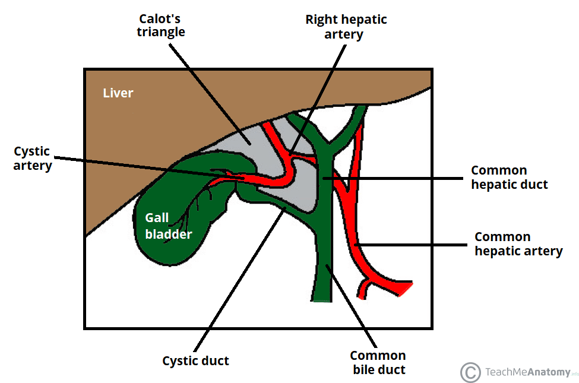

PAD
Luc Vedrenne
01.07.2026
A quick informal introduction for new colleagues.
Safe Dissection Line prediction during laparoscopic cholecystectomy.
The methodology behind the prediction pipeline.
Graduated after working on tumor classification from SpyGlass video with AP-HP.
Under the supervision of S. Faisan and D. Fortun: joint registration of multiple point clouds in fluorescence microscopy.
Started a postdoc in the CAMMA team.
Current postdoctoral work in the CAMMA team
Laparoscopic cholecystectomy is the standard treatment for gallbladder disease.
Bile duct injury remains a rare but severe adverse event.

Videos, annotations, and clinical context to be detailed.
Ambiguity, anatomy, visibility, and workflow variability to be detailed.